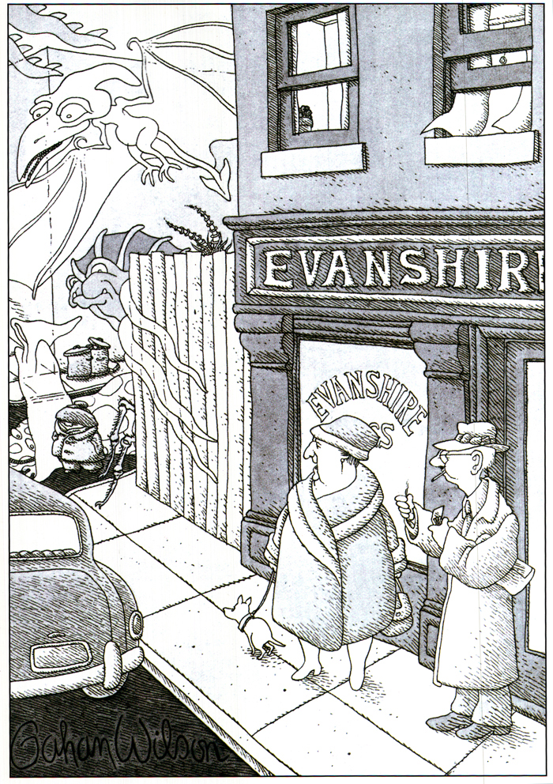
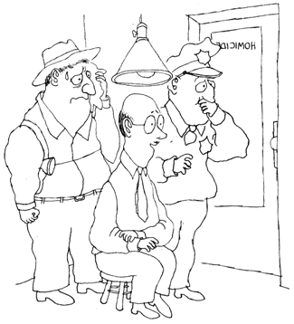
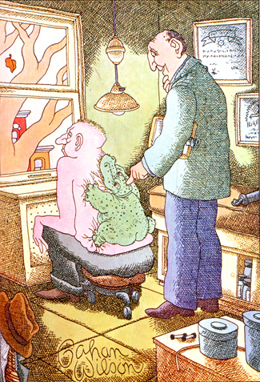
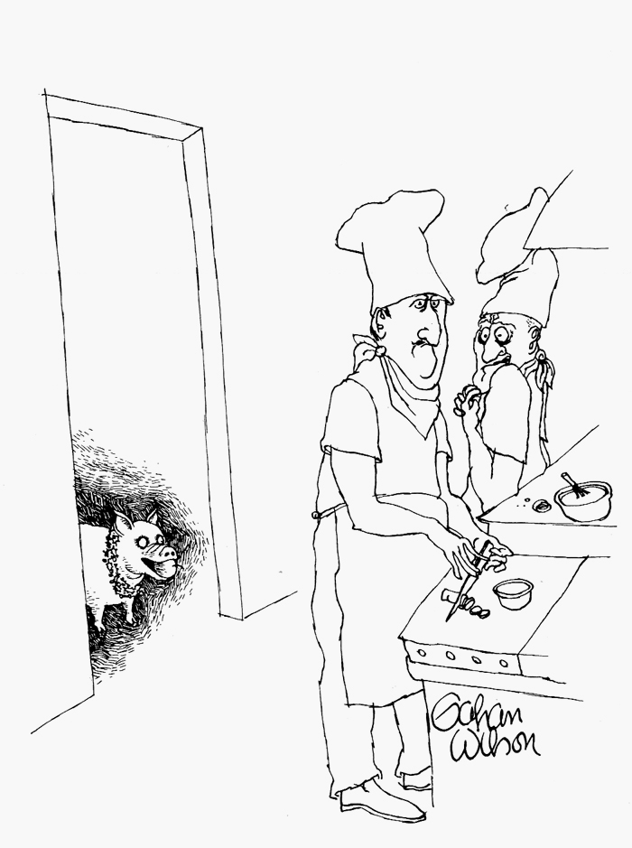
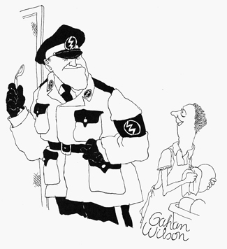
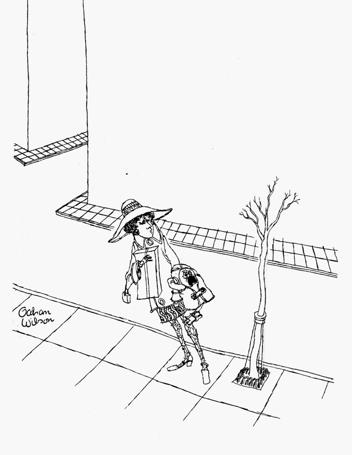
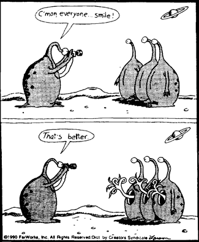
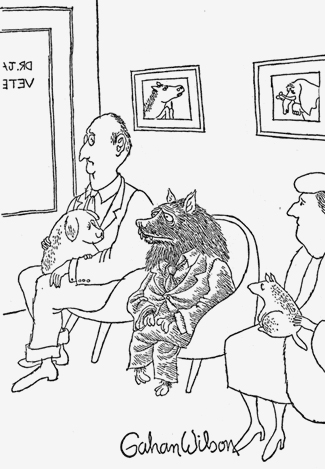

GAHAN WILSON
Не про юмор
Пока суть до дело, наступил Апрель, стало быть, тема вот она. Поговорим, друзья, о юморе. Вернее, начнем с юмора: ловить в этой теме особенно нечего. Как и любое чувство, юмор не терпит профессиональной эксплуатации (все мы знаем, к чему она приводит), и даже гениальнейшие из шутников в негомеопатических дозах надоедают стремительно. Мир карикатуры дал нам, однако, такое множество выдающихся рисовальщиков — или же, скорее, стольким выдающимся рисовальщикам позволил по-настоящему разойтись — что игнорировать этот жанр нам никак нельзя.
Человек, которому я хочу здесь поклониться, Gahan (Гэ ан?) Wilson, мне стал известен по журналу Плейбой (так что, если кто помнит мое обещание, не подкопаетесь) хотя в рисовании сисек особенно не замечен (жаль, я посмотрел бы). Но это, конечно, совершенно неважно, что было сделано для Нью Йоркера, что для National Lampoon и т.д.. По счастью, за рубежом сборничек Уилсона можно найти на любой книжной барахолке.
Не скажу, чтобы меня как-то особенно смешили его шутки — шутки как шутки. Разве что с чертовщинкой, впрочем, она суть еще одно бескрайнее поле для шуток про вампиров, Франкенштейновых монстров и прочего. Другое дело что Уилсон, похоже, и правда с ними на ты.

Вон идет малыш Уилсон, совершенно один, как всегда.
Как и все лучшие в профессии, Уилсон шутит чуть прикусив губу, местами даже немного по-гоголевски так. Человеческая душа для него потемки, но зрение у него как у кошки. Характер он чувствует, пожалуй, что гениально. Отдельные вещи даже и карикатурой назвать не поворачивается язык — глубоко копает.

Мне продолжать?
Однако множество более остроумных людей благополучно канули в Лету, и до тонких психологов нам дела нет. Я вообще-то хотел сказать одно: смотрите, какая линия. Ощущается тактильно, кожей. Даже и не знаю, кто еще так это умеет (разве Эдвард Гори, который очевидно сильно на Уилсона повлиял). Кажется, как раз за этим он намеренно шершавит ее, растрепывает. От нее чувство в точности как будто провел пальцем по шерстяной нитке.
Сюда же очень характерная форма всего, надутая, оплывающая, мягкая, чуть пупырчатая, при этом теплая и сухая. Уж не знаю, что это нам говорит об авторе, но щупать — приятно. Сюда же штриховка. Я не говорю про высокий класс владения пером или чем там — этому-то в принципе учат, но вот этому — нет.

Кажется, я нашел проблему, мистер Недлер!
Очень эффектно работают контрасты между чистым и заштрихованным. Собственно, при таком воздушном рисунке, что на расстоянии вытянутой руки выглядит чистым листом, ни о каком балансе белого и черного речь тут не идет. Смотреть сюда, и все. Я сказал.

Оно снова здесь, Анри!

Хорошо повеселиться на собрании Ложи, дорогой!
Если сравнивать, чего я большой любитель, рисование с музыкой, то линия, профиль ее, так сказать, это тембр голоса. У Уилсона он высокий, хрипловатый, но мягкий. Какой он у вас? задумайтесь. Поэтому линия, в том числе выбор инструмента (по толщине) говорит о художнике больше, чем традиционные для него сюжеты, цвета, все остальное. Мне тут пришло в голову, что именно наличие осмысленной линии отличает сложившегося иллюстратора, и более того, именно она (оно (наличие)) разделяет ученический рисунок и, простите, товар. Можно одеваться, краситься, ходить, глядеть как крайне уверенный в себе человек, но голос непременно выдаст.

Не бойся милый, это дерево.
Для порядка скажу, что Уилсону многим обязан (с его же слов) Гери Ларсон, величайший карикатурист всех времен (в отставке), если оценивать по массе нарисованного. впрочем, он и правда вывел карикатуру на новый уровень прекрасной дурости, куда больше никто пока что не долез. Не слишком очевидно, чему именно он научился у нашего героя, но можно, пожалуй, разглядеть у них некоторые общие элементы подхода, некий специфический абсурд; и еще всеобщую пухлость. В смысле рисунка тут говорить особенно не о чем, но дико смешно.


Пара бонусов:
Click! фотоотчет об увеселительной поездке одной американской семьи на Марс.